Traducción de la sección 3.1 del manual GIM6010-8 rev 2.2 (págs. 15–38 del original). En las capturas de pantalla, la interfaz aparece en chino; los pies de figura traducen las etiquetas relevantes.
Para poner el motor en funcionamiento necesita:
Consulte en el capítulo 1 los requisitos de tensión de alimentación; se recomienda una fuente estabilizada o una batería. Una duda frecuente de los usuarios es cómo elegir la fuente. A continuación se dan algunas recomendaciones sencillas, solo a título orientativo.
Puntos a tener en cuenta al elegir la fuente:
En general debe ser de al menos 5 A. El valor concreto depende de la potencia que necesite el sistema y de la tensión.
La tensión necesaria depende de dos factores: la Kv del motor y la velocidad máxima que requiera el sistema, RPMmáx. La tensión máxima de alimentación puede estimarse con la fórmula:
V_máx = (RPM_máx / Kv) × 1,25
donde 1,25 es un coeficiente empírico que deja al sistema un margen de tensión seguro.
En cuanto a la potencia, dicho de forma sencilla, depende de la corriente máxima Imáx a la velocidad más alta; puede estimarse con la fórmula:
P_máx = I_máx × (RPM_máx / Kv) × 1,25
El 6010-8 lleva un conector 2+2 de alimentación y comunicación; pida al servicio posventa que le recomiende un cable 2+2 adecuado. Consulte el apartado 2.4.1 y conecte sin falta correctamente el positivo y el negativo de la alimentación: de lo contrario existe riesgo de quemar el driver, porque no tiene protección contra inversión de polaridad. Fíjese además en el orden de las dos líneas de comunicación (el orden de CANH/CANL): si se invierten, la comunicación no funcionará correctamente.
En las primeras fases del ajuste se recomienda encarecidamente probar el motor con un cable de datos USB Type-C. Sirve el típico cable Type-C de teléfono móvil, pero no puede usarse un cable Type-C que sea solo de carga.
Tenga en cuenta que el cable Type-C no alimenta el driver y, mucho menos, permite mover el motor.
Apague primero la fuente, conecte el cable de alimentación y encienda después. No conecte ni desconecte con tensión, ni use un magnetotérmico para cortar solo el cable positivo o solo el negativo: eso provoca una corriente de arranque excesiva que quema el driver.
Una vez alimentado, el cable USB Type-C puede conectarse y desconectarse en cualquier momento.
Descargue el instalador para Windows (https://bl.cyberbeast.cn/actuator/steadywin_motorwizard.exe) e instálelo siguiendo los pasos por defecto.
Entre en https://zadig.akeo.ie y descargue la herramienta de drivers USB Zadig. Conecte el driver del motor al ordenador con el cable Type-C —se encenderá el led de alimentación del driver—, abra Zadig y seleccione en la lista desplegable «CyberBeast Motor Driver Device (Interface 2)»:
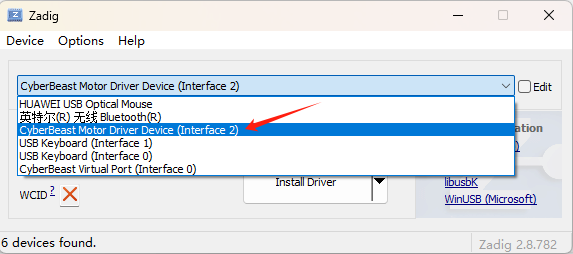
Con las flechas arriba/abajo se eligen los distintos drivers USB: para esta interfaz seleccione el driver libusb y pulse «Install Driver» o «Replace Driver» para instalarlo:
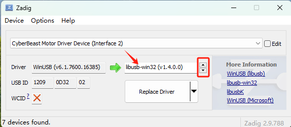
El driver es compatible con ODrive (https://github.com/odriverobotics/odrive.git), por lo que se utiliza odrivetool como software de PC para el ajuste.
Instale odrivetool siguiendo estos pasos:
1. Instalar Python. Entre en la web oficial de Python (https://www.python.org), descargue el instalador más reciente e instálelo siguiendo las indicaciones. No descargue versiones de Python de webs de terceros ni de la Microsoft Store.
2. Instalar las Visual C++ Build Tools. Instale las herramientas desde https://visualstudio.microsoft.com/visual-cpp-build-tools/ y marque durante la instalación la carga de trabajo «Desarrollo para el escritorio con C++», como se ve en la imagen.
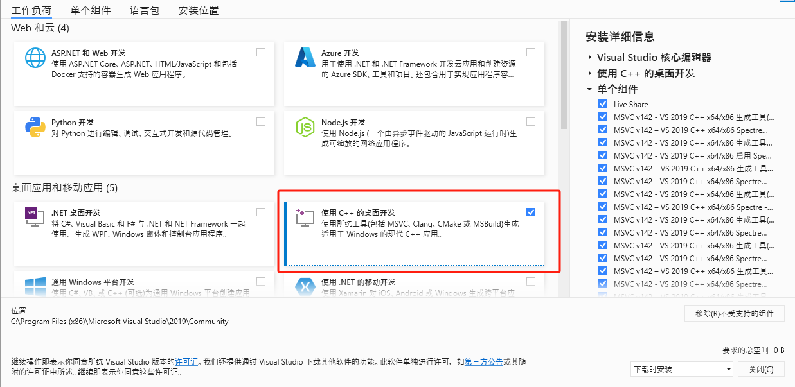
3. Instalar odrivetool. Ejecute Windows PowerShell como administrador y lance pip install odrive. Si falla a mitad, reinténtelo; si vuelve a fallar varias veces, reinicie el ordenador y pruebe de nuevo.
4. Instalar el driver USB. Entre en https://zadig.akeo.ie y descargue Zadig. Conecte el driver al ordenador con el cable Type-C —se encenderá el led de alimentación—, abra Zadig y seleccione en el desplegable «CyberBeast Motor Driver Device (Interface 2)»:
Con las flechas arriba/abajo se eligen los distintos drivers USB: para esta interfaz seleccione el driver WinUSB y pulse «Install Driver»:
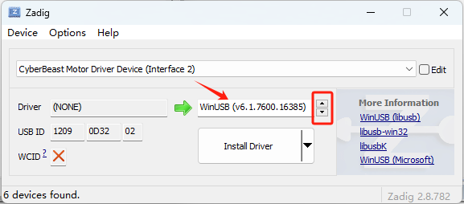
odrivetool el driver WinUSB. Al cambiar de programa hay que volver a asignar el driver correspondiente con Zadig.1) Instalar Python, USB y odrivetool. Si tiene instalado WSL2, abra la línea de comandos de WSL2 y siga estos pasos (se supone que la distribución instalada es Ubuntu):
sudo apt install python3 python3-pip sudo apt install libusb-1.0-0 sudo pip install odrive numpy matplotlib
La primera orden instala Python, la segunda el driver USB y la tercera el software de PC odrivetool.
2) Conectar el driver a WSL. Al enchufar el cable Type-C a Windows, este carga por defecto el driver de ese puerto USB, pero WSL no. Hay que exponer ese puerto USB dentro de WSL; siga la documentación de Microsoft (https://learn.microsoft.com/es-es/windows/wsl/connect-usb).
La instalación en Ubuntu es muy parecida a la de WSL; consulte el apartado anterior.
Una vez instalado el software de PC (Motor Wizard u odrivetool) según el apartado anterior, con el motor alimentado y el cable USB Type-C conectado:
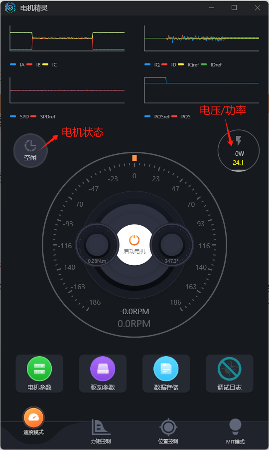
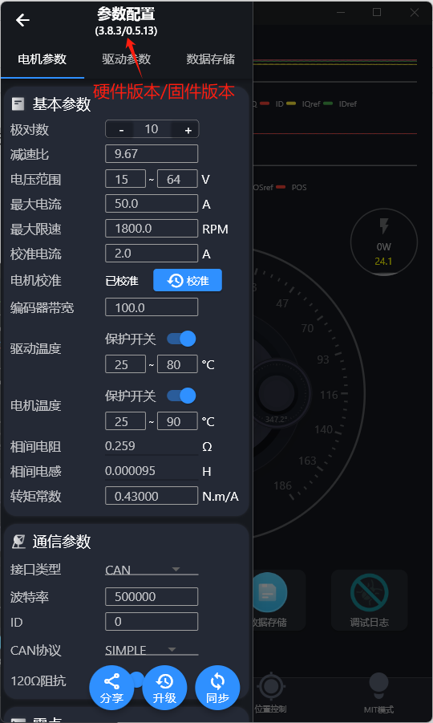
Al abrir el Motor Wizard, si la conexión se ha establecido —imagen de la izquierda— se muestran el estado del motor y la tensión; si no, no aparece una lectura de tensión válida.
Al pulsar «电机参数» (parámetros del motor) la parte superior de la interfaz muestra la versión de hardware y la de firmware del driver; en la imagen de la derecha, la versión de hardware es la 3.8.3 y la de firmware la 0.5.13.
Ejecute odrivetool en una consola (Windows PowerShell o un terminal de Linux) escribiendo odrivetool y pulsando Intro. La imagen siguiente muestra una conexión correcta en Windows (los datos de conexión se muestran en verde):
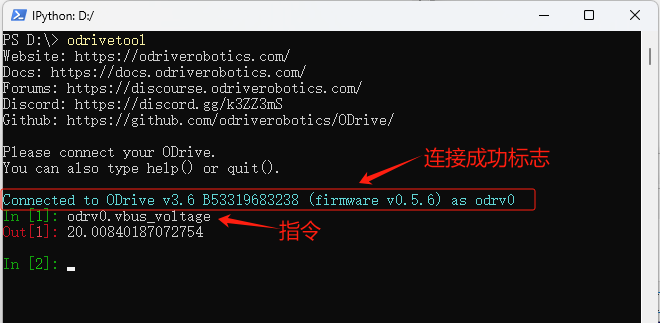
odrivetool con el driver conectado.Ejemplo de comando: odrv0.axis0.controller.input_vel. odrv0 designa el motor conectado actualmente: el primero que se conecta se llama odrv0, el segundo odrv1, y así sucesivamente. axis0 designa el primer motor conectado al driver; la versión actual solo admite un motor. Ese comando consulta la consigna de velocidad actual del driver.
Pulse «电机参数» (parámetros del motor) en el Motor Wizard: en el recuadro rojo de la imagen siguiente pueden ajustarse los límites clave: rango de tensión, límite de corriente (corriente máxima), límite de velocidad (velocidad máxima) y corriente de calibración.
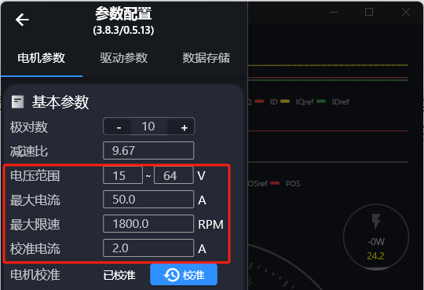
El límite de corriente se ve afectado también por la temperatura; consulte la descripción del apartado siguiente (odrivetool).
El límite de velocidad se refiere normalmente a los modos de control de velocidad y de posición, pero también puede activarse el limitador de velocidad en el modo de control de par. En el Motor Wizard, pulse «驱动参数» (parámetros del driver) para activar ese conmutador, como muestra el recuadro rojo:
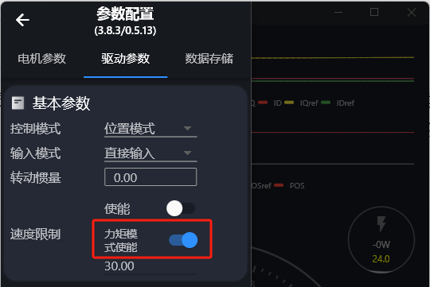
⚫ Límite de corriente
odrv0.axis0.motor.config.current_lim = 30
El comando anterior fija el límite de corriente en 30 A. Tenga en cuenta que este límite se refiere a la corriente del eje Q, no a la corriente de la fuente de alimentación, y limita directamente el par de salida. En el 6010-8, no fije este límite por encima de 50 A.
odrv0.axis0.motor.motor_thermistor.config.enabled=1), la temperatura actual del motor influye también en la corriente del eje Q.odrv0.axis0.motor.fet_thermistor.config.enabled=1), la temperatura actual de la placa influye también en la corriente del eje Q.El efecto de ambas temperaturas es muy parecido y puede expresarse con la fórmula:
I'_lim = (T − T_l) / (T_u − T_l) × I_lim
donde I'lim es el límite de corriente que acaba aplicándose, Ilim es el límite configurado, T es la temperatura actual (del motor o de la placa), Tl es el límite inferior de temperatura configurado (motor_thermistor.config.temp_limit_lower y fet_thermistor.config.temp_limit_lower) y Tu el límite superior (motor_thermistor.config.temp_limit_upper y fet_thermistor.config.temp_limit_upper).
⚫ Límite de velocidad
odrv0.axis0.controller.config.vel_limit = 30
Es el límite global de velocidad del sistema; el comando anterior lo fija en 30 vueltas/s. Tenga en cuenta que, por defecto, este límite no actúa en el modo de par puro, pero puede habilitarse con el siguiente conmutador:
odrv0.axis0.controller.config.enable_torque_mode_vel_limit = 1
⚫ Corriente de calibración
Su valor por defecto es 5 A y normalmente no hace falta cambiarlo, pero si la fuente de alimentación del usuario da poca corriente puede reducirse; de lo contrario aparecerá una alarma de subtensión durante la calibración.
odrv0.axis0.motor.config.calibration_current = 2
Pulse «电机参数» (parámetros del motor) en el Motor Wizard: el recuadro rojo de la imagen siguiente muestra algunos parámetros de hardware importantes.
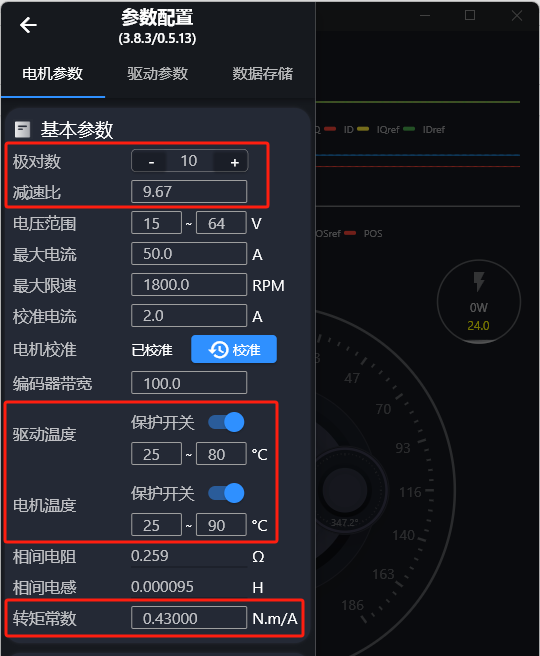
El significado de estos parámetros se explica en el apartado siguiente (odrivetool).
⚫ Corriente máxima de descarga y de carga
La corriente de descarga es la corriente directa que la fuente entrega al driver y al motor; la de carga es la corriente inversa que vuelve hacia la fuente. Ambos valores dependen de la fuente de alimentación: fije valores adecuados para evitar que la fuente no pueda entregar corriente y la tensión se hunda, o que la fuerza contraelectromotriz la dañe. Ahora bien, si se les da un valor absoluto demasiado pequeño, es muy fácil que salten alarmas.
odrv0.config.dc_max_negative_current odrv0.config.dc_max_positive_current
⚫ Pares de polos
Los pares de polos son el número de polos magnéticos del rotor dividido entre dos. El usuario debe fijar correctamente este valor para que la calibración tenga éxito; de lo contrario dará una alarma de calibración.
odrv0.axis0.motor.config.pole_pairs
⚫ Constante de par
La constante de par es el par que produce el motor dividido entre la corriente del eje Q; su relación con la Kv del motor es: Torque_Constant = 8,27 / Kv.
odrv0.axis0.motor.config.torque_constant
Que la constante de par sea correcta no afecta al funcionamiento del motor, pero sí a la conversión de unidades del valor que se introduce al hacer control de par. Si el usuario prefiere trabajar en amperios en lugar de en N·m, basta con poner este valor a 1.
⚫ Sensores de temperatura
Tanto la placa del driver como el interior del motor llevan sensores NTC. Si se habilitan, el driver regula la corriente de salida (el par) en función de la temperatura, protegiendo así al driver y al motor.
# Protección térmica del motor odrv0.axis0.motor.motor_thermistor.config.enabled = 1 odrv0.axis0.motor.motor_thermistor.config.temp_limit_lower = 20 odrv0.axis0.motor.motor_thermistor.config.temp_limit_upper = 100 # Protección térmica de la placa del driver odrv0.axis0.motor.fet_thermistor.config.enabled = 1 odrv0.axis0.motor.fet_thermistor.config.temp_limit_lower = 20 odrv0.axis0.motor.fet_thermistor.config.temp_limit_upper = 100 # Lectura de las temperaturas odrv0.axis0.motor.motor_thermistor.temperature # temperatura del motor odrv0.axis0.motor.fet_thermistor.temperature # temperatura de la placa
El procedimiento siguiente sirve de referencia para ajustar los parámetros del PID:
odrv0.axis0.controller.config.pos_gain=20.0 odrv0.axis0.controller.config.vel_gain=0.16 odrv0.axis0.controller.config.vel_integrator_gain=0.32
vel_integrator_gain a 0:
odrv0.axis0.controller.config.vel_integrator_gain=0
vel_gain así:
vel_gain hasta que el giro sea suave.vel_gain un 30 % cada vez hasta que aparezcan vibraciones evidentes.vel_gain aproximadamente un 50 %: así queda estable.pos_gain así:
pos_gain hasta que sea suave.pos_gain un 30 % cada vez hasta que el control de posición presente una sobreoscilación evidente (es decir, el motor rebasa la posición objetivo y vuelve a ella oscilando).pos_gain poco a poco hasta que desaparezca la sobreoscilación.vel_integrator_gain = 0,5 × ancho_de_banda × vel_gain, donde ancho de banda es el ancho de banda de control del sistema. ¿Qué es el ancho de banda de control? Por ejemplo, si desde que el usuario fija la posición objetivo hasta que el motor llega realmente a ella pasan 10 ms, el ancho de banda es de 100 Hz, y entonces vel_integrator_gain = 0,5 × 100 × vel_gain.Durante este proceso de ajuste se recomienda usar las herramientas gráficas del apartado 3.1.8 para ver el efecto en tiempo real y evitar los errores de apreciación a simple vista. Con el Motor Wizard el efecto del ajuste del PID se ve directamente; la imagen siguiente muestra los parámetros del PID:
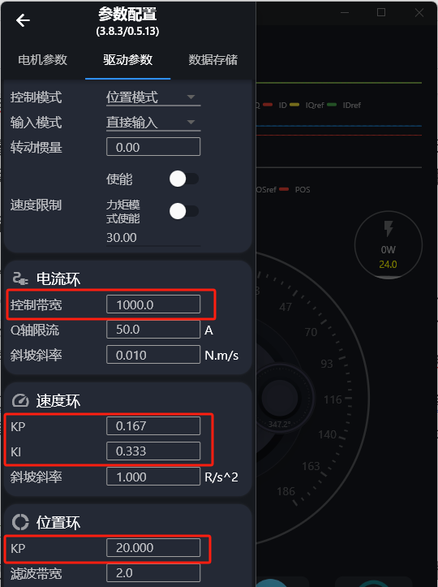
La primera vez que se usa el micromotor hay que calibrar el motor y el encoder. Antes de calibrar, fije bien el motor o sujételo con firmeza, con el eje de salida sin carga. El proceso es el siguiente.
Abra el Motor Wizard y pulse «启动电机» (arrancar motor). Si el motor no está calibrado aparecerá este aviso:
Al pulsar «确定» (aceptar) se entra en el proceso de calibración. También puede pulsar «电机参数» (parámetros del motor) en la pantalla principal: en «基本参数» (parámetros básicos) se muestra el estado de calibración del motor y, si aparece el estado («未校准», sin calibrar), basta con pulsar el botón «校准» (calibrar) que hay a su derecha para iniciar igualmente la calibración.
Una vez iniciada, la interfaz avisa:
En ese momento el motor emite un pitido y empieza a girar. Observe el giro: si tras un rato se detiene, pulse «已停止» (se ha detenido) para terminar la calibración; si no gira, o si pasados 5 minutos sigue sin pararse, pulse «取消» (cancelar).
Al terminar la calibración el driver se reinicia; espere de 1 a 3 segundos. Después puede volver a «电机参数» (parámetros del motor) y comprobar si aparece («已校准», calibrado).
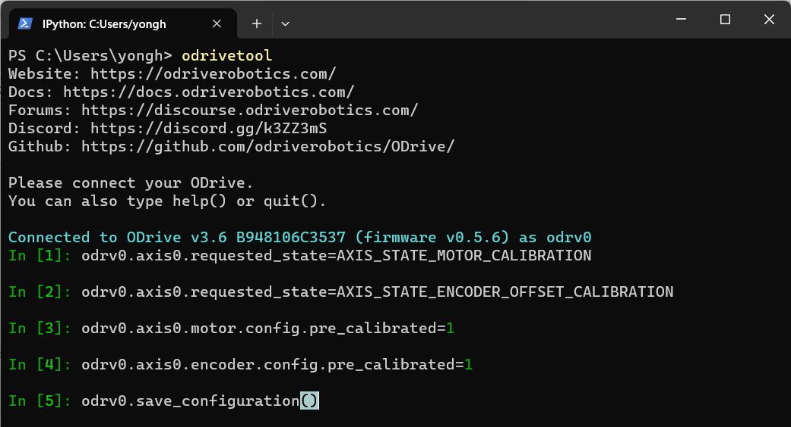
odrivetool.odrv0.axis0.requested_state = AXIS_STATE_MOTOR_CALIBRATION dump_errors(odrv0) odrv0.axis0.requested_state = AXIS_STATE_ENCODER_OFFSET_CALIBRATION dump_errors(odrv0) odrv0.axis0.motor.config.pre_calibrated = 1 odrv0.axis0.encoder.config.pre_calibrated = 1 odrv0.save_configuration()
Explicación paso a paso:
Se miden la resistencia y la inductancia de fase del motor; se oirá un pitido agudo. Los resultados pueden consultarse con:
odrv0.axis0.motor.config.phase_resistance odrv0.axis0.motor.config.phase_inductance
Consulte los códigos de error del sistema después del paso 1. Si aparece cualquier código de error en rojo, hay que reiniciar el motor y volver a intentarlo, o avisar al servicio posventa.
Se calibra el encoder: tanto el ángulo de montaje del encoder respecto al ángulo mecánico del motor como el propio encoder. Durante el proceso el motor gira despacio un cierto ángulo hacia delante y después el mismo ángulo hacia atrás. Si solo gira hacia delante y se detiene, es que ha habido un error; compruébelo con el paso 4.
Tras la calibración del encoder del paso 3, consulte los códigos de error del sistema. El error más habitual es ERROR_CPR_POLEPAIRS_MISMATCH, que indica que el CPR del encoder está mal configurado o que los pares de polos del motor son incorrectos. Consúltelos o modifíquelos con:
odrv0.axis0.encoder.config.cpr odrv0.axis0.motor.config.pole_pairs
odrv0.axis0.encoder.config.pre_calibrated = 1 odrv0.axis0.motor.config.pre_calibrated = 1 odrv0.save_configuration()
El ID del driver es único en el bus, con un rango de 0 a 63 y valor por defecto 0. Si el usuario tiene varios motores conectados al mismo bus, debe asignar un ID distinto a cada uno. El ID puede cambiarse por USB o por el bus.
Abra el Motor Wizard, conéctese al motor, pulse «电机参数» (parámetros del motor), modifique el ID en el apartado «通信参数» (parámetros de comunicación) y pulse «同步» (sincronizar) para guardarlo en el driver.
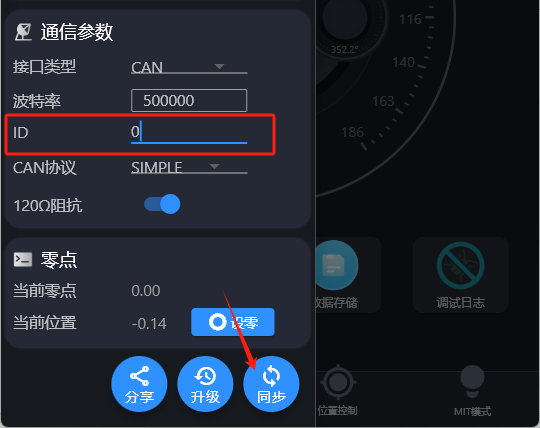
Con el driver conectado por odrivetool, el ID se cambia con:
odrv0.axis0.config.can.node_id = xxx
Consulte el mensaje Set_Axis_Node_ID del apartado 4.1.2.
Después de modificar cualquier parámetro, guárdelo sin falta; de lo contrario los cambios se perderán al cortar la alimentación o reiniciar. Tras guardar, el driver se reinicia.
odrv0.save_configuration()
Copia de seguridad de los parámetros:
odrivetool backup-config "d:/test.json"
donde d:/test.json es la ruta y el nombre de archivo, que el usuario puede cambiar libremente.
El comando para restaurar los parámetros es:
odrivetool restore-config "d:/test.json"
Tras los preparativos y la configuración anteriores, ya se puede intentar mover el motor en los distintos modos. El 6010-8 admite control de posición, control de velocidad, control de par y modo de control de movimiento.
El modo de control de movimiento combina posición, velocidad y par; se usa normalmente en aplicaciones que necesitan mucha fuerza instantánea, como la rodilla de un robot. En el sector también se le llama modo de control MIT, nombre que viene del perro robot de código abierto del MIT, que emplea este modo de control para gobernar sus motores.
En la descripción detallada de cada modo se usan como ejemplo el software de PC y los comandos por USB, pero puede hacerse exactamente lo mismo mediante un protocolo de comunicación (por ejemplo CAN): la lógica es idéntica.
◆ Arrancar el motor (entrar en control en lazo cerrado). En todas las operaciones que siguen, para que el motor gire hay que llevarlo al estado de control en lazo cerrado. En el Motor Wizard basta con pulsar «启动电机» (arrancar motor); en odrivetool el comando es:
odrv0.axis0.requested_state = 8
◆ Parar el motor (pasar a reposo). Para detener el motor, o para modificar y guardar parámetros, hay que llevarlo primero al estado de reposo. En el Motor Wizard se pulsa «停止电机» (parar motor); en odrivetool:
odrv0.axis0.requested_state = 1
Al abrir el Motor Wizard se ven abajo cuatro pestañas que corresponden a los cuatro modos de control: «速度控制» (control de velocidad), «力矩控制» (control de par), «位置控制» (control de posición) y «MIT 模式» (modo MIT).
Tras arrancar el motor, el dial se ilumina en color; casi todas las operaciones se hacen sobre el dial.
✓ Clic sobre el dial. Un clic sobre el dial ordena controlar la velocidad, el par o la posición hasta el valor del dial en ese punto. Cada clic equivale a un comando de control; el usuario puede hacer varios clics seguidos para ir controlando el motor.
✓ Clic derecho sobre el dial. Con el botón derecho aparece un cuadro de diálogo donde puede introducirse el valor exacto de velocidad, par o posición y ejecutarlo pulsando Intro; haciendo clic fuera del cuadro se cancela.
✓ Mantener pulsado y arrastrar sobre el dial. Mantener pulsado y arrastrar sobre el dial es un control continuo: se envían constantemente comandos de velocidad, par o posición cuyo objetivo es el valor del dial bajo el cursor.
Pulsando «驱动参数» (parámetros del driver) pueden ajustarse el modo de control, el límite de velocidad, las ganancias de los tres lazos (anchos de banda), etc. Se recomienda parar antes el motor y modificar y sincronizar después los parámetros.
Si el usuario quiere generar él mismo la trayectoria de posición y enviar comandos de posición a cierta frecuencia, se recomienda el control de posición filtrado, porque este modo encadena esos comandos de forma suave. Si en ese caso se usara el control por curva trapezoidal, el giro del motor podría resultar entrecortado o granuloso.
En este modo hay que ajustar el ancho de banda del filtro a la frecuencia de envío de comandos; una buena regla empírica es fijarlo a la mitad de esa frecuencia (en Hz). Por ejemplo, si se envían comandos a 50 Hz:
odrv0.axis0.controller.config.input_filter_bandwidth = 25
Habilitar el control de posición filtrado:
odrv0.axis0.controller.config.control_mode = 3 odrv0.axis0.controller.config.input_mode = 3
Y después controlar la posición:
odrv0.axis0.controller.input_pos = 10 # unidad: vueltas
Este modo permite fijar la aceleración, la velocidad de crucero y la deceleración para llevar el motor suavemente de una posición a otra. «Trapezoidal» se refiere a la forma de la curva de velocidad, como se ve en la figura: en naranja la velocidad y en azul la posición.
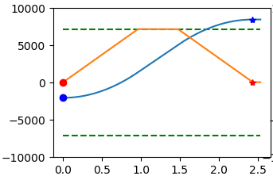
Parámetros de control ajustables:
odrv0.axis0.trap_traj.config.vel_limit # velocidad de crucero máxima, en vueltas/s odrv0.axis0.trap_traj.config.accel_limit # aceleración máxima, en vueltas/s² odrv0.axis0.trap_traj.config.decel_limit # deceleración máxima, en vueltas/s² odrv0.axis0.controller.config.inertia # inercia, en N·m/(vueltas/s²)
Tenga en cuenta que inercia × aceleración = par, y que este valor es 0 por defecto. Ajustarlo puede mejorar la respuesta del sistema, pero depende directamente de la carga del motor. Los cuatro valores anteriores deben ser mayores o iguales que cero. Recuerde además que los límites de corriente y de velocidad mencionados antes siguen actuando de forma global: por ejemplo, si la velocidad de crucero máxima se fija por encima del vel_limit del sistema, el que se aplica es el vel_limit global.
Para habilitar el modo de curva trapezoidal, primero:
odrv0.axis0.controller.config.control_mode = 3 odrv0.axis0.controller.config.input_mode = 5
Y después controlar la posición:
odrv0.axis0.controller.input_pos = 10 # unidad: vueltas
Este modo sirve para el control de posición incremental continuo: por ejemplo, la rueda de un robot que gira en un sentido durante un rato, o una cinta transportadora en marcha permanente. Con el control de posición normal, la posición objetivo iría creciendo hasta un valor muy grande y aparecerían errores de posicionamiento por la precisión de los números en coma flotante.
Habilitación:
odrv0.axis0.controller.config.circular_setpoints = 1
En este modo cada paso queda dentro de una vuelta y el rango de input_pos es [0, 1). Si input_pos supera ese rango, se convierte al valor equivalente dentro de una vuelta. Si el usuario quiere que un paso abarque más de una vuelta, puede fijar el parámetro siguiente a un número mayor que 1:
odrv0.axis0.controller.config.circular_setpoint_range = <N>
Es el control de velocidad más sencillo; se habilita así:
odrv0.axis0.controller.config.control_mode = 2 odrv0.axis0.controller.config.input_mode = 1
Después se introduce la velocidad objetivo:
odrv0.axis0.controller.input_vel = 10 # unidad: vueltas/s
El control de velocidad en rampa lleva la velocidad hasta el valor objetivo de forma progresiva, siguiendo una pendiente determinada; es más suave que el control de velocidad directo. Se habilita así:
odrv0.axis0.controller.config.control_mode = 2 odrv0.axis0.controller.config.input_mode = 2
La aceleración se controla ajustando la pendiente:
odrv0.axis0.controller.config.vel_ramp_rate = 0.5 # pendiente, en vueltas/s²
Después se introduce la velocidad objetivo:
odrv0.axis0.controller.input_vel = 10 # unidad: vueltas/s
Es el modo de control de par (corriente) más sencillo; se habilita así:
odrv0.axis0.controller.config.control_mode = 1 odrv0.axis0.controller.config.input_mode = 1
La unidad del control de par es el N·m, mientras que en el firmware del driver la unidad de corriente es el amperio, por lo que hay que fijar además la constante de par para que el driver pueda convertir N·m en corriente y entregar el par pedido.
# La constante de par es aproximadamente 8,23 / Kv odrv0.axis0.motor.config.torque_constant = 8.23/12.3
Después se introduce el par objetivo:
odrv0.axis0.controller.input_torque = 1.2 # unidad: N·m
Tenga en cuenta también que, si desea limitar la velocidad máxima en modo par, puede activar enable_torque_mode_vel_limit y fijar vel_limit:
odrv0.axis0.controller.config.enable_torque_mode_vel_limit = 1 odrv0.axis0.controller.config.vel_limit = 30 # unidad: vueltas/s
El control de par en rampa es muy parecido al de velocidad en rampa; se habilita así:
odrv0.axis0.controller.config.control_mode = 1 odrv0.axis0.controller.config.input_mode = 6
La pendiente se ajusta así:
odrv0.axis0.controller.config.torque_ramp_rate = 0.1 # pendiente, en N·m/s
El modo de control de movimiento lleva el motor a la posición objetivo combinando el control de posición, velocidad y par, según las fórmulas:
T_objetivo = Kp × P_dif + Kd × V_dif + T_ff P_dif = P_objetivo − P_actual V_dif = V_objetivo − V_actual
donde Tobjetivo es el par objetivo, Pdif el error de posición, Vdif el error de velocidad, Kp la ganancia del control de posición, Kd la ganancia del control de velocidad (o coeficiente de amortiguamiento) y Tff el par de prealimentación (feedforward).
El modo de control de movimiento se habilita así:
odrv0.axis0.controller.config.control_mode = 3 odrv0.axis0.controller.config.input_mode = 9
Ajuste de las ganancias:
odrv0.axis0.controller.input_mit_kp = <float> # ganancia de posición, en N·m/vuelta odrv0.axis0.controller.input_mit_kd = <float> # coef. de amortiguamiento, en N·m/(vuelta/s) odrv0.axis0.controller.input_pos = 5 # unidad: vueltas odrv0.axis0.controller.input_vel = 30 # unidad: vueltas/s odrv0.axis0.controller.input_torque = 2 # unidad: N·m
El movimiento se controla después mediante input_pos, input_vel e input_torque.
Una vez establecida la conexión, el usuario puede controlar el motor y consultar sus parámetros de funcionamiento mediante comandos. La tabla siguiente recoge los comandos más habituales del proceso de ajuste, con su explicación.
| Tipo | Comando | Descripción |
|---|---|---|
| Comandos básicos | dump_errors(odrv0) | Imprime toda la información de errores |
odrv0.clear_errors() | Borra toda la información de errores | |
odrv0.save_configuration() | Después de modificar parámetros, o de la autoidentificación o la calibración del motor, ejecute sin falta este comando para guardar los cambios; de lo contrario se pierden al cortar la alimentación | |
odrv0.reboot() | Reinicia el driver | |
odrv0.vbus_voltage | Lee la tensión de alimentación (V) | |
odrv0.ibus | Lee la corriente de alimentación (A) | |
odrv0.hw_version_major | Versión mayor del hardware; en el 6010-8 es actualmente 3 | |
odrv0.hw_version_minor | Versión menor del hardware; en el 6010-8 es actualmente 8 | |
| Comandos de configuración de parámetros | odrv0.hw_version_variant | Código de modelo dentro de una misma configuración de hardware; al 6010-8 le corresponde el código 1 |
odrv0.can.config.r120_gpio_num | Número de GPIO que controla el conmutador de la resistencia de terminación de 120 Ω del bus CAN | |
odrv0.can.config.enable_r120 | Conmutador de la resistencia de terminación de 120 Ω del bus CAN | |
odrv0.can.config.baud_rate | Velocidad en baudios del CAN | |
odrv0.config.dc_bus_undervoltage_trip_level | Umbral de alarma por subtensión (V) | |
odrv0.config.dc_bus_overvoltage_trip_level | Umbral de alarma por sobretensión (V) | |
odrv0.config.dc_max_positive_current | Corriente de línea máxima (valor positivo) (A) | |
odrv0.config.dc_max_negative_current | Corriente máxima de carga inversa hacia la fuente (valor negativo) (A) | |
odrv0.axis0.motor.config.resistance_calib_max_voltage | Tensión máxima durante la identificación de los parámetros del motor; normalmente algo menor que la mitad de la tensión de alimentación (con 24 V, puede ponerse 10) | |
odrv0.axis0.motor.config.calibration_current | Corriente máxima durante la identificación de los parámetros del motor; suele fijarse entre 2 y 5 A, ni demasiado alta ni demasiado baja | |
odrv0.axis0.motor.config.torque_constant | Constante de par del motor (N·m/A) | |
odrv0.axis0.min_endstop.configodrv0.axis0.max_endstop.config | Configuración de los finales de carrera mínimo (LW1) y máximo (LW2):enabled: habilitado o nogpio_num: número de E/S correspondiente; ponga 1 en el final de carrera mínimo y 2 en el máximo | |
| Comandos de configuración de parámetros | odrv0.axis0.encoder.config.index_offset | Desplazamiento del cero fijado por el usuario: es el desfase del cero de usuario respecto al cero del encoder. Una vez fijado y guardado, todas las consignas de posición que introduzca el usuario se refieren a ese cero de usuario |
odrv0.axis0.motor.motor_thermistor.configodrv0.axis0.motor.fet_thermistor.config | Configuración de los sensores de temperatura del motor y del driver:enabled: habilitado o notemp_limit_lower: límite inferior de temperaturatemp_limit_upper: límite superior de temperatura | |
odrv0.axis0.motor.motor_thermistor.temperature | Temperatura del motor | |
odrv0.axis0.motor.fet_thermistor.temperature | Temperatura del driver | |
| Comandos de calibración | odrv0.axis0.requested_state=4 | Identifica los parámetros del motor: resistencia e inductancia de fase y equilibrado de las corrientes de las tres fases. El proceso dura de 3 a 6 segundos y el motor emite un sonido agudo. Cuando el sonido cese —o si a los 6 segundos no ha sonado nada—, ejecute dump_errors(odrv0) para ver los errores y no siga hasta confirmar que no hay ninguno |
odrv0.axis0.requested_state=7 | Calibra el encoder. Antes de ejecutarlo, asegúrese de que el eje de salida no tiene ninguna carga y de que el motor está sujeto con la mano o con algún dispositivo. Al ejecutarlo, el motor gira un tiempo en un sentido y en el otro para identificar y calibrar el encoder. Cuando se detenga, ejecute dump_errors(odrv0) y no continúe hasta confirmar que no hay errores | |
odrv0.axis0.encoder.config.pre_calibrated=1 | Escribe el indicador de precalibración correcta, con lo que no hace falta calibrar en cada arranque. Solo puede escribirse si la calibración anterior ha tenido éxito; en caso contrario, la escritura falla | |
odrv0.axis0.controller.config.load_encoder_axis=0 | Garantiza que el motor sobre el que se opera es el número 0. Solo es necesario en las versiones BETA; en las versiones de producción no tiene efecto | |
| Comandos de control | odrv0.axis0.requested_state=1 | Para el motor y lo pone en reposo |
odrv0.axis0.requested_state=8 | Arranca el motor y lo pone en lazo cerrado | |
odrv0.axis0.motor.config.current_lim | Corriente de línea máxima de funcionamiento (A); por encima de este valor salta la alarma de sobrecorriente. No debe superar 100 | |
odrv0.axis0.controller.config.vel_limit | Velocidad máxima de funcionamiento (vueltas/s); si la velocidad del rotor la supera, salta la alarma de sobrevelocidad | |
odrv0.axis0.controller.config.enable_vel_limit | Conmutador del límite de velocidad: con True, el vel_limit anterior actúa; con False, no | |
odrv0.axis0.controller.config.control_mode | Modo de control: 0: control de tensión 1: control de par 2: control de velocidad 3: control de posición | |
odrv0.axis0.controller.config.input_mode | Modo de entrada: indica de qué manera el valor introducido por el usuario gobierna el motor: 0: inactivo 1: control directo 2: rampa de velocidad 3: filtro de posición 5: curva trapezoidal 6: rampa de par 9: control de movimiento (MIT) | |
odrv0.axis0.controller.config.vel_gain | Valor P del PID del lazo de velocidad | |
odrv0.axis0.controller.config.vel_integrator_gain | Valor I del PID del lazo de velocidad | |
odrv0.axis0.controller.input_mit_kp | Ganancia de posición del control de movimiento (MIT) | |
odrv0.axis0.controller.input_mit_kd | Ganancia de velocidad (coeficiente de amortiguamiento) del control de movimiento (MIT) | |
odrv0.axis0.controller.config.pos_gain | Valor P del PID del lazo de posición | |
odrv0.axis0.controller.input_torque | Consigna del control de par, o par de prealimentación en los controles de velocidad y posición (N·m) | |
odrv0.axis0.controller.input_vel | Consigna del control de velocidad, o velocidad de prealimentación en el control de posición (vueltas/s) | |
odrv0.axis0.controller.input_pos | Consigna del control de posición (vueltas) | |
odrv0.axis0.encoder.set_linear_count() | Fija la posición absoluta del encoder; entre paréntesis se indica un entero de 32 bits cuyo valor absoluto debe ser menor que odrv0.axis0.encoder.config.cpr | |
| Comandos de control | odrv0.axis0.trap_traj.config | Contiene tres parámetros: ➢ accel_limit: aceleración máxima (rev/s²)➢ decel_limit: deceleración máxima (rev/s²)➢ vel_limit: velocidad máxima (rev/s)Actúan cuando odrv0.axis0.controller.config.input_mode es la curva trapezoidal, y regulan la aceleración y deceleración del control de posición |
odrv0.axis0.controller.config.input_filter_bandwidth | Ancho de banda del filtro de posición; actúa cuando odrv0.axis0.controller.config.input_mode es el filtro de posición, y regula la aceleración y deceleración del control de posición |
Si durante el ajuste del motor se necesita vigilar en tiempo real algunos parámetros de funcionamiento, pueden aprovecharse las potentes bibliotecas de cálculo y de gráficos de Python junto con la alta velocidad de la interfaz Type-C para representarlos en directo.
1. Preparar el entorno. Instale las bibliotecas de cálculo y de gráficos:
pip install numpy matplotlib
2. Representar los parámetros. Desde la línea de comandos de odrivetool, lance la biblioteca gráfica leyendo cualquier magnitud del motor, por ejemplo:
start_liveplotter(lambda:[odrv0.ibus, odrv0.axis0.encoder.pos_estimate, odrv0.axis0.controller.input_pos], ["ibus","pos","pos_target"])
Este comando abre una ventana gráfica que muestra en tiempo real tres magnitudes: corriente de línea, posición y posición objetivo. Si a continuación se hace control de posición, se ve la curva de posición del motor en directo:
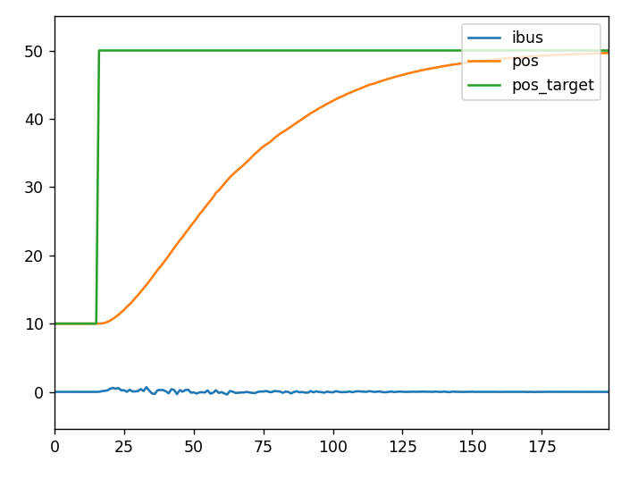
start_liveplotter con la corriente de línea, la posición y la posición objetivo.En las primeras versiones de este producto (versión de hardware igual o anterior a la 3.7, que puede consultarse con los comandos odrv0.hw_version_major y odrv0.hw_version_minor de este mismo apartado 3.1.8), USB y CAN no son compatibles entre sí y hay que conmutar entre ambos como se indica a continuación. Con versiones de hardware posteriores a la 3.7 puede ignorarse este apartado.
Con el CAN deshabilitado, el usuario puede comunicarse por el conector Type-C; para pasar a CAN se usan estos comandos:
odrv0.config.enable_can_a = True odrv0.axis0.requested_state = AXIS_STATE_IDLE odrv0.save_configuration()
Con el CAN habilitado, el usuario debe enviar primero el mensaje Set_Axis_State (con el parámetro 1, que indica el estado de reposo, IDLE) para llevar el motor a reposo, y después el mensaje Disable_Can para pasar a USB (véase el apartado 4.1.2).
El driver lleva integrada una resistencia de adaptación de impedancia de 120 Ω que el usuario puede activar o desactivar según le convenga. Ejemplo de comandos:
odrv0.can.config.r120_gpio_num = 5 odrv0.can.config.enable_r120 = True
Por defecto, tanto la posición que el usuario lee del motor como el valor que introduce al hacer control de posición se refieren al cero del encoder absoluto del driver. Sin embargo, en la mayoría de las aplicaciones el cero del encoder no coincide con el cero que le interesa al usuario, por lo que hay que fijar manualmente ese desplazamiento del cero.
En general hay dos formas de establecerlo: mediante un final de carrera, o fijando manualmente el desfase del cero de usuario respecto al cero del encoder:
# Tras llevar el motor, a mano o por control de posición, a la posición # que se desea como cero de usuario: odrv0.axis0.encoder.config.index_offset = odrv0.axis0.encoder.pos_estimate
El driver admite dos finales de carrera (LW1 y LW2): LW1 es la posición mínima, que es también la posición de referencia (home), y LW2 la posición máxima. Para usar ambos, aplique esta configuración:
odrv0.axis0.min_endstop.config.enabled = True odrv0.axis0.min_endstop.config.gpio_num = 1 odrv0.axis0.max_endstop.config.enabled = True odrv0.axis0.max_endstop.config.gpio_num = 2
Al activarse un final de carrera, el sistema notifica el error MIN_ENDSTOP_PRESSED o MAX_ENDSTOP_PRESSED, momento en el que el software de control puede actuar en consecuencia.
El usuario puede conectar una resistencia de frenado (también llamada resistencia de descarga) entre los terminales EMG y GND descritos en el apartado 2.4.7; cuando la corriente del bus retorna hacia la fuente, esa resistencia deriva y disipa la corriente instantánea.
Se habilita con esta configuración:
odrv0.config.enable_brake_resistor = True odrv0.config.brake_resistance = xxx # valor de la resistencia de frenado conectada odrv0.save_configuration()
¿Cómo se consigue que el driver disipe automáticamente? Pueden combinarse las dos formas siguientes para que el controlador ajuste solo la corriente de descarga:
odrv0.config.max_regen_current = xxx # valor máximo de la corriente inversa, positivo
Cuando la corriente inversa supera el valor configurado, el driver deriva la corriente sobrante a la resistencia de descarga.
odrv0.config.enable_dc_bus_overvoltage_ramp = True odrv0.config.dc_bus_overvoltage_ramp_start = xxx # tensión inferior a partir de la cual se deriva odrv0.config.dc_bus_overvoltage_ramp_end = xxx # tensión superior de derivación
Cuando la tensión generada por la fuerza contraelectromotriz supera el límite inferior, el driver empieza a derivar corriente a la resistencia de descarga; cuando alcanza o supera el límite superior, aplica toda la tensión sobre la resistencia para intentar disiparla. Entre ambos límites, el driver aplica sobre la resistencia una parte proporcional de la tensión del bus (la tensión contraelectromotriz).